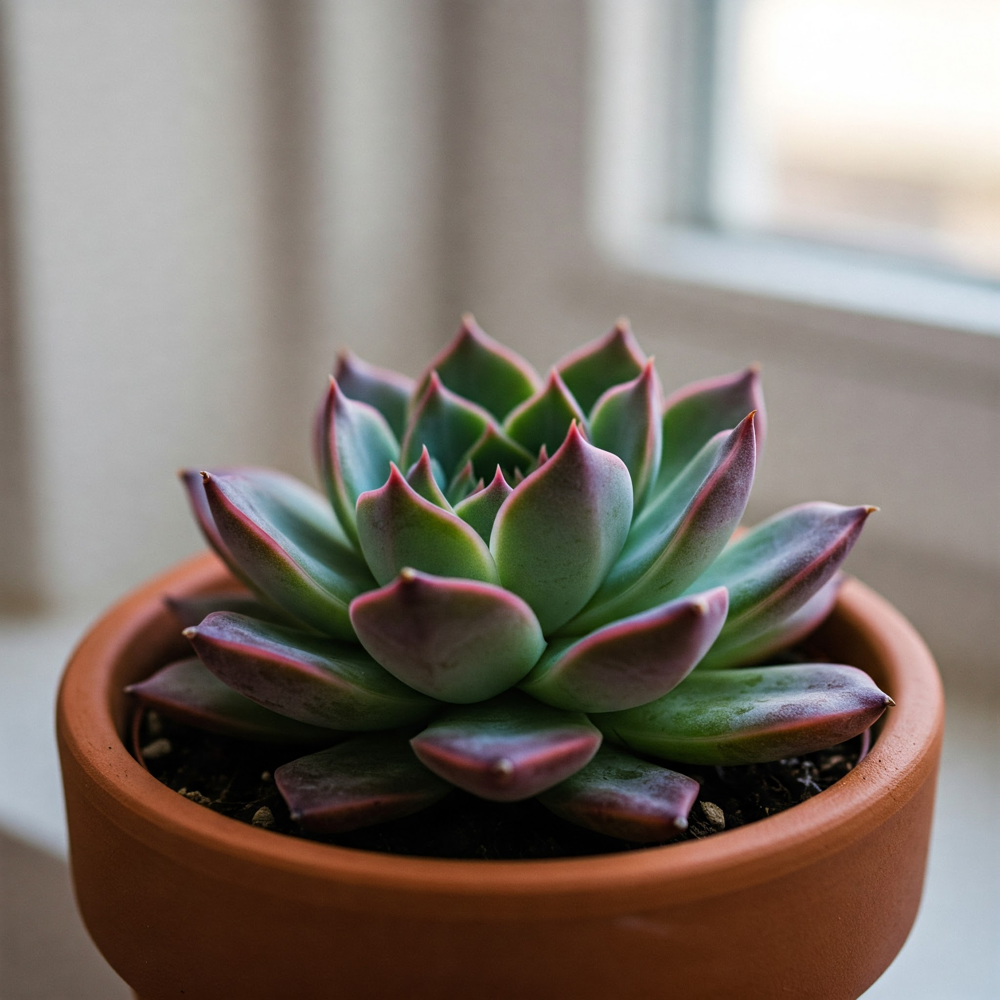

Echeveria (Molded Wax Agave)

Description
Echeverias are popular succulents known for their distinctive rosette shapes formed by fleshy, often colourful leaves. Originating mainly from Mexico and Central/South America, they store water in their leaves, making them drought-tolerant. *Echeveria agavoides*, or Molded Wax Agave, typically has green, pointed leaves that may develop reddish tips in strong light. They are relatively compact and slow-growing, perfect for containers and rock gardens.
Care Instructions
- Light: Requires bright light to thrive, including several hours of direct sunlight if possible. A south-facing window is ideal indoors. Insufficient light causes stretching (etiolation).
- Water: Water sparingly. Allow the soil to dry out completely between waterings. Water thoroughly, letting excess water drain away completely. Reduce watering drastically in the winter months.
- Soil: Must use a very well-draining soil mix, typically a cactus or succulent mix, or add sand/perlite to regular potting soil.
- Temperature: Prefers average to warm temperatures 18-27°C (65-80°F) during the growing season. Protect from frost.
- Humidity: Tolerates dry air very well; high humidity is not needed.
- Fertilizer: Feed very sparingly, if at all. Use a diluted cactus/succulent fertilizer once or twice during spring/summer only.
Fun Facts
- Origin: Primarily Mexico and Central/South America.
- Variety: Numerous species and countless hybrids exist with diverse colours, shapes, and sizes.
- Name: Named after 18th-century Mexican botanical artist Atanasio Echeverría y Godoy.
- Flowering: Many produce attractive bell-shaped flowers on tall stalks, often in shades of pink, orange, or red.
- Propagation: Easily propagated from offsets (pups) or leaf cuttings.
Toxicity
Generally considered non-toxic to humans, cats, and dogs, making them a safe succulent choice.